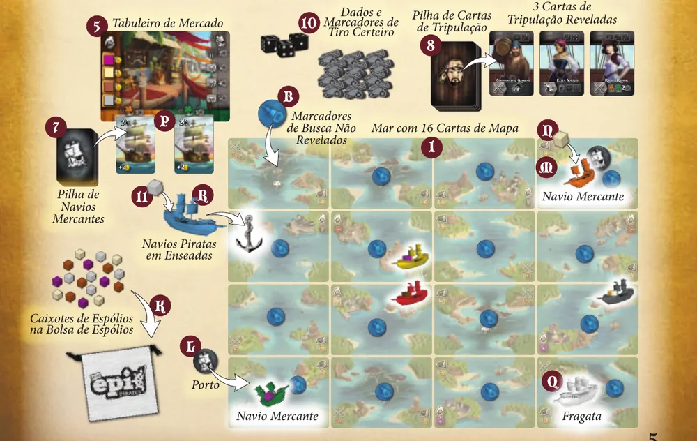
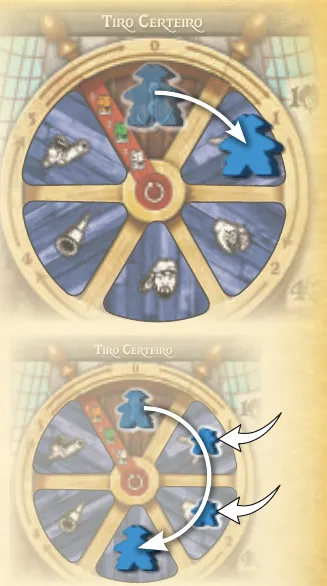
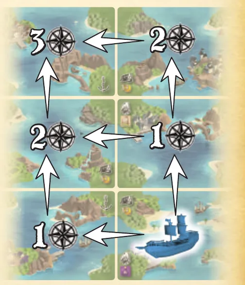
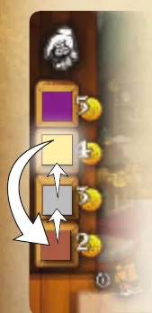
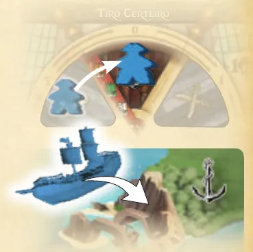
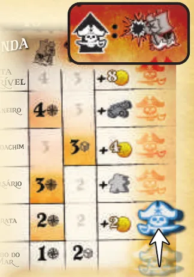
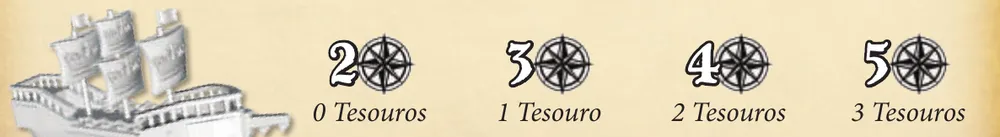

Para quem nunca jogou1 a 4 jogadores30 a 45 min14+Edição Meeple BR
· Redação Elite Boardgamers
Resumo em 1 minuto
Você move o Capitão no Timão para escolher a Ordem do turno, navega, pilha, vende Espólios e ataca navios para juntar Ouro, e vence quem enterrar primeiro 3 Tesouros.
A cada turno o Capitão avança no Timão; pular espaços custa Marujos, que saem do Cordame, dos Canhões ou da Extorsão.
Ouro vem de pilhar, vender Espólios no Mercado, buscar no mar e afundar Navios Mercantes; o máximo é 13.
Enterrar Tesouro é uma Ação Bônus da Carta de Capitão; o terceiro dispara o fim, e a Fragata persegue quem dá a volta no Timão.
Como você aprende: 5 etapas, da mesa montada à contagem de pontosLeitura do essencial: cerca de 14 min
À vista, só o essencial para jogar. O que abre com + é explicação, exemplo, exercício ou regra de caso especial: abra quando precisar.
Comece a jogar em 4 minutos
Meta: em 4 minutos de leitura, montar a mesa e jogar o seu primeiro turno sem abrir o manual.
A ideia do jogo
Você comanda um navio pirata. Vence quem primeiro enterrar 3 tesouros, o que custa Ouro, ganho pilhando vilas, vendendo Espólios, buscando no mar e atacando. A cada turno, o Capitão anda no Timão e escolhe a Ordem do turno. Marujos o fazem pular espaços, mas cada um que sai do trabalho deixa o navio mais lento ou mais fraco.
Monte a mesa
Na ordem. O marcado (depois) se monta já e se usa mais tarde.
As 16 Cartas de Mapa embaralhadas numa grade de 4 por 4: é o Mar. Um Marcador de Busca virado para baixo em cada carta; os que sobram voltam fechados para a caixa p. 4.
Cada jogador escolhe uma cor. Tabuleiro de Lenda: Marcador de Lenda na casa de baixo, lado sem sangue para cima; Dobrão de Ouro no 1; 3 Tesouros na base; 1 Marujo no ícone da terceira linha (depois)p. 4.
Tabuleiro de Timão: os 5 Marcadores de Ordem embaralhados, um em cada espaço de 1 a 5; o Capitão no 0, o Esconderijo; 1 Marujo em cada Missão: Cordame, Canhões e Extorsão. O Reparo fica vazio p. 4.
Cada um recebe 1 Carta de Capitão sorteada (depois)p. 4.
Tabuleiro de Mercado: 1 cubo de cada cor, ao acaso, nos 4 espaços da esquerda. Os outros vão para a Bolsa de Espólios p. 4.
Os 2 Portos em cantos opostos, com 1 Navio Mercante em cada um, apontado para o outro Porto, com 1 cubo da Bolsa (depois)p. 4.
Cartas de Mercador em 4 grupos (2, 4, 6, 8), cada um embaralhado: 8 embaixo e 2 no topo. Vire as 2 de cima nos 2 espaços da base do Mercado: a da esquerda é do Navio Mercante Laranja, a da direita do Verde (depois)p. 5.
Cartas de Tripulação embaralhadas; vire 3 numa fila p. 5.
O primeiro jogador põe a Fragata num canto sem Navio Mercante. Em sentido horário, cada um põe o Navio Pirata numa carta com Enseada (âncora) livre, onde começa escondido, e escolhe o lado da Carta de Capitão p. 5.
Dados e Marcadores de Tiro Certeiro ao alcance (depois)p. 5.
O primeiro jogador põe no navio um cubo da cor que vale 2 no Mercado; o segundo, a de 3; e assim por diante p. 5.
Seu primeiro turno
O turno tem cinco passos, sempre nesta ordem p. 6 e 16:
Ordem. Avance o Capitão no sentido horário, pelo menos 1 espaço. O espaço seguinte é de graça; para pular um espaço, ponha nele um Marujo tirado de uma Missão. A Ordem do turno é o marcador onde o Capitão parou p. 7.
Navegue, se quiser: 1 carta (Lenda inicial) mais 1 por Marujo no Cordame, só pelos lados. Entrar ou passar numa carta com Tempestade (nuvem) empurra o navio: 1 Marujo de Cordame, Canhões ou Extorsão vai para o Reparo p. 8 e 16.
Execute a Ordem, se quiser, na carta onde parou: Pilhar, Negociar, Recrutar, Buscar ou Atacar (p. 9 a 12).
Ações Bônus, se quiser: se o ícone mais à esquerda da Carta de Capitão é a Ordem do turno, faça as ações do canto de baixo dela p. 13.
Linha de Navios: só se o Capitão passou do 5 para o 0. Saindo do 0, isso não acontece no primeiro turno p. 7 e 15.
Quando alguém enterra o terceiro Tesouro, a rodada se completa até todos terem jogado o mesmo número de turnos. Vence quem enterrou os 3 p. 16.
Prefere ver? O vídeo abaixo resume uma partida. Ele complementa este guia; em caso de diferença, vale o manual.
TINY EPIC PIRATES, Gameplay resumida em 10 minutos, canal Duque Board Games · abrir no YouTube
0Antes de tudo: o que é este jogoOpcional
Abrir esta seção
Cada jogador é um capitão pirata. O mar é uma grade de 16 Cartas de Mapa, com ilhas que têm Assentamentos para pilhar, Mercados para vender, Enseadas para se esconder, Locais de Tesouro e Tempestades. Vence quem primeiro enterrar os 3 Tesouros p. 3 e 6.
Enterrar exige estar na carta do Local de Tesouro e pagar o Ouro impresso ali, e o Ouro não passa de 13 p. 3 e 13. O jogo é um ciclo: juntar Espólios, vender, juntar Ouro, enterrar.
O coração do jogo é o Timão: 5 Marcadores de Ordem em ordem sorteada, um Capitão que só anda para a frente e um Marujo por espaço pulado. Os Marujos também trabalham nas Missões: no Cordame dão movimento, nos Canhões dão dano, na Extorsão dão Ouro p. 7. A pergunta de cada turno é qual Ordem você quer e quanto do navio aceita sacrificar por ela.
De fora pressionam a Fragata, que persegue quem completa uma volta no Timão, os outros piratas e as Tempestades p. 8, 12 e 15.
1Como este guia ensinaOpcional
Abrir esta seção
Cinco etapas, cada uma uma parte real da partida: montar a mesa; o Timão e os Marujos; navegar e as Ordens do dia a dia; atacar e subir de Lenda; Ações Bônus, Tesouros e a Fragata. Em cada etapa: Para entender (o porquê), Passo a passo (a regra exata), Regras adicionais para casos que não acontecem em todo turno, e tarefas com ajuda decrescente (exemplo resolvido, complete, sua vez, treino rápido). Escolha uma opção e aparecem a certa e a explicação. No fim, uma avaliação diz o que reler, e uma folha de consulta vai para a mesa.
2Etapa 1: montar a mesa
Por que funciona assim

A mesa montada para 4 jogadores: o Mar de 16 Cartas de Mapa com os Marcadores de Busca, os dois Navios Mercantes nos Portos de cantos opostos, a Fragata num dos outros cantos, os Navios Piratas nas Enseadas, o Tabuleiro de Mercado com as duas Cartas de Mercador e a fila de 3 Cartas de Tripulação. Ilustração: manual Meeple BR p. 5Regra adicional: Os dois lados da Carta de CapitãoRegra adicional: Partida soloPratique esta etapa: exercícios com respostas
3Etapa 2: o Timão e os Marujos
Por que funciona assim

Em cima, o Capitão sai do Esconderijo e avança de graça para o espaço seguinte. Embaixo, ele pula dois espaços, e em cada um fica um Marujo. Ilustração: manual Meeple BR p. 7Ver um exemplo resolvidoPratique esta etapa: exercícios com respostas
4Etapa 3: navegar e as Ordens do dia a dia
Por que funciona assim

O navio navega 3 cartas, sempre pelos lados: o manual mostra três caminhos diferentes, todos com 3 de movimento. Ilustração: manual Meeple BR p. 8

A tabela do Mercado: alguém vende Cana-de-açúcar, que valia 4; ela desce para 2, e os dois cubos que estavam abaixo sobem um valor cada. Ilustração: manual Meeple BR p. 9Regra adicional: Limites de Ouro e de Tiro CerteiroSobre a ediçãoRegra adicional: Trocar a fila de TripulaçãoRegra adicional: Tripulação completaRegra adicional: Motim

Esconder-se: o Capitão para no Esconderijo, e o navio entra na Enseada da carta. Ilustração: manual Meeple BR p. 12Sobre a ediçãoVer um exemplo resolvidoPratique esta etapa: exercícios com respostas
5Etapa 4: atacar e ganhar Lenda
Por que funciona assim
Nível
Movimento
Dados
Prêmio ao chegar
Lobo do Mar
1
2
(início)
Pirata
2
2
2 Ouros
Corsário
3
2
1 Marujo
Espadachim
3
3
4 Ouros
Bucaneiro
4
3
1 Marcador de Tiro Certeiro
Pirata Terrível
4
3
8 Ouros

A Trilha de Lenda: cada nível mostra o movimento, os dados e o prêmio. O Marcador de Lenda sobe do Lobo do Mar para Pirata e ganha 2 Ouros. No alto, o ícone Ganhar Lenda. Ilustração: manual Meeple BR p. 16Sobre a ediçãoRegra adicional: Navio Mercante de 8Ver um exemplo resolvidoPratique esta etapa: exercícios com respostas
6Etapa 5: Ações Bônus, Tesouros e a Fragata
Por que funciona assim

A velocidade da Fragata: 2 cartas contra quem não enterrou nenhum Tesouro, 3 contra quem enterrou 1, 4 contra 2 e 5 contra 3. Ilustração: manual Meeple BR p. 15Regra adicional: Navio Mercante no Porto de destinoRegra adicional: Negociar Espólio EspecialRegra adicional: Trocar e Receber OuroRegra adicional: Navegue a Fragata ou o Navio MercanteRegra adicional: RerrolarRegra adicional: RealocarRegra adicional: Navegar (Ação Bônus)Ver um exemplo resolvido
O fim da partida
Pratique esta etapa: exercícios com respostas
7Situações especiaisOpcional
Abrir esta seção
Navios escondidos no começo. Todos começam numa Enseada, escondidos, e por isso não podem ser atacados pelos outros nem pela Fragata enquanto estiverem lá p. 5 e 12. O manual não diz em palavras quando o navio deixa de estar escondido. Ele se esconde ao ser posto sobre a Enseada p. 12, e quem navega termina no centro da carta p. 8. Este guia lê assim: o navio que navega sai da Enseada e deixa de estar escondido; o que não navega continua escondido.
Ouro acima de 13. O excesso se perde, inclusive o de prêmio de Lenda ou de Extorsão p. 3.
Sobre a edição: Pontos que o manual não fechaSobre a edição
8Avaliação finalOpcional
Abrir esta seção
Responda sem consultar. Cada resposta diz o que reler.
1. Capitão no 2, nenhum Marujo no Timão. Quantos Marujos para parar no 5?
2, nos espaços 3 e 4 p. 7. Releia a etapa 2.
2. O Capitão passa por um espaço com Marujo de um turno anterior. O que acontece com esse Marujo?
Vai para uma Missão à sua escolha, mas não pula outro espaço no mesmo turno p. 7. Releia a etapa 2.
3. Você é Corsário (3) e tem 1 Marujo no Cordame. Passa por duas Tempestades e tira, nas duas, Marujos da Extorsão. Quanto movimento tem?
4: o Cordame não foi tocado p. 8. Releia a etapa 3.
4. O Rum vale 5. Você vende 3 Rum. Quanto recebe, e quanto o Rum passa a valer?
15 Ouros, e o Rum desce para 2 p. 9. Releia a etapa 3.
5. Seu dano empata com o do Navio Mercante. O que acontece?
Empate não afunda; você ganha 1 Marcador de Tiro Certeiro e não é Empurrado p. 11 e 12. Releia a etapa 4.
6. Seu Capitão está sobre Atacar, mas a sua Carta de Capitão tem Pilhar à esquerda. Pode fazer o Enterrar dela?
As Ações Bônus da carta só valem quando a Ordem do turno é o ícone mais à esquerda dela p. 13. Releia a etapa 5.
7. Você já enterrou 2 Tesouros e cruza a Linha de Navios. Quantas cartas a Fragata anda?
4p. 15. Releia a etapa 5.
8. A Fragata chega à sua carta, mas você está escondido numa Enseada. O que acontece?
Escondido, você não é atacado pela Fragata p. 12 e 15. Releia a etapa 3.
9Para consultar durante a partida
Seu turno
Ordem: Capitão avança no sentido horário (mínimo 1). Próximo espaço grátis; pular espaço vazio custa 1 Marujo de qualquer Missão; o 0 é grátis; Marujo de turno anterior pulado ou alcançado volta para uma Missão (e não pula de novo).
Navegar: movimento da Lenda + 1 por Marujo no Cordame + Busca de movimento. Só pelos lados. Tempestade (entrar ou atravessar): Empurrado.
Ordem: Pilhar (Assentamento, 1 ou 2 cubos, navio leva 3), Negociar (até 3 cubos do tipo do Mercado; tipo vendido vai a 2), Recrutar (máx. 4; renovar fila: 1 Ouro; Motim 1 vez), Buscar (marcador fechado), Atacar, Esconder-se (no 0, Enseada livre, realoca Marujos).
Ações Bônus: carta cujo ícone da esquerda é a Ordem. Capitão primeiro (Enterrar antes), depois Tripulação.
Linha de Navios (passou do 5 para o 0): 1 Ouro por Marujo na Extorsão; jogador à direita move Mercante Laranja, Mercante Verde e a Fragata.
Empurrado: 1 Marujo de Cordame, Canhões ou Extorsão para o Reparo; sem nenhum, 1 do Timão. Fragata: todos os Marujos (Missões e Timão) para o Reparo.
Dano: dados da Lenda; 1 por símbolo igual nas cartas; Tiro Certeiro muda um dado; +1 por Marujo nos Canhões; + dano automático. Mercante: precisa de mais dano que a carta. Empate: Tiro Certeiro. Perdeu: Empurrado + Tiro Certeiro.
Fragata: anda 2, 3, 4 ou 5 para quem enterrou 0, 1, 2 ou 3 Tesouros.
Enterrar: carta do Local de Tesouro, Ouro do preço, sem Fragata, Local livre.
Limites: Ouro 0 a 13. Navio Pirata 3 cubos. Tiro Certeiro 3 (citado ao Buscar). Tripulação 4.
Não foram encontrados FAQ nem errata oficiais em português até 01/11/2026. O manual original em inglês não foi usado.
Regras conferidas no manual da edição brasileira, "O Código dos Piratas" (Meeple BR, 2022, tradução de Romir G. E. Paulino), o PDF de 20 páginas linkado na página do produto. As páginas citadas são as desse manual.